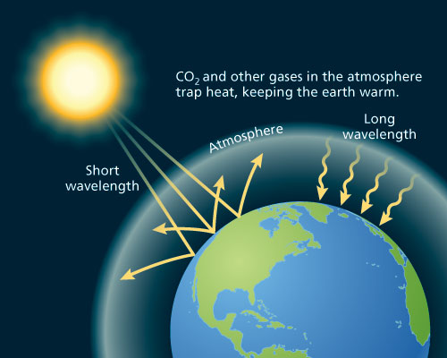
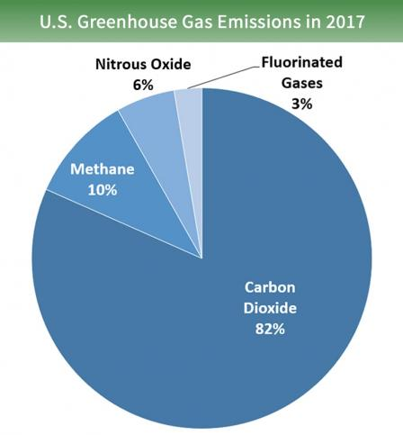
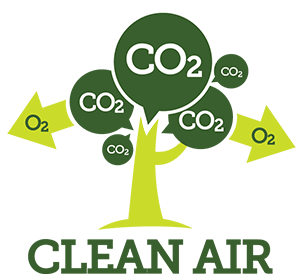
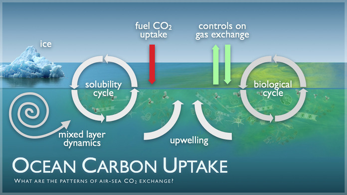
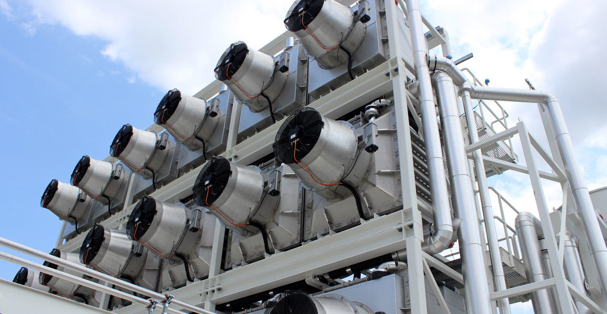
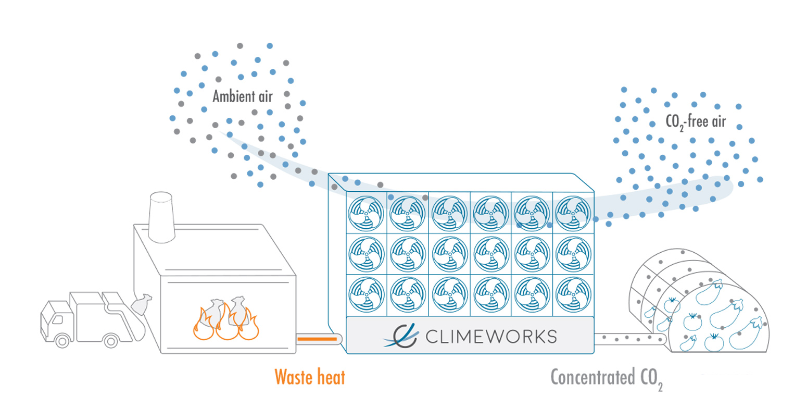
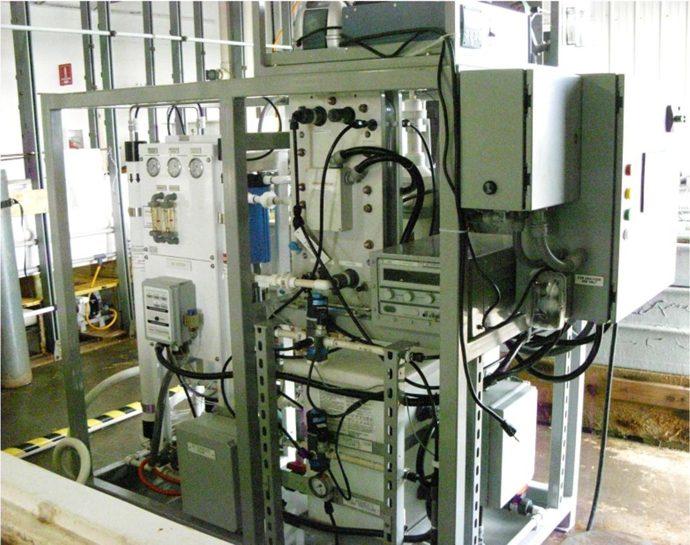

By trapping the sun’s heat, our atmosphere is able to sustain life on Earth. Gases trapped in the atmosphere allow the sun’s rays to pass through and heat up the Earth. These gases prevent this heat to escape into space. Without greenhouse gases that trap heat, our Earth would become too cold and uninhabitable. The problem is that greenhouse gases are increasing faster than we can get rid of them. In the last thousands of years, the amount of greenhouse gases was stable. The Earth’s natural processes were able to remove as much greenhouse gases as much gases were produced from our atmosphere. However, in recent years, human activities such as deforestation and burning of fossil fuels have caused the gases in our atmosphere to rise to an exponential level.

When greenhouse gases are released into our atmosphere, they stay there for about 40 years. However, the effects stay for longer. The effects of these gases will remain for decades, centuries and even millennials. Scientists estimate that 7 percent of the carbon released today will be present in the atmosphere 100 000 years from now. Other gases such as methane and nitrous oxide have one major process that removes them from the atmosphere. Hydroxyl radicals (chemical reactions) are able to remove methane. Chemical reactions that involve light/photons get rid of nitrous oxide (photolytic reactions). Gases are rapidly accumulating in the atmosphere and will affect future generations.
Trees absorb greenhouse gases such as carbon dioxide and nitrogen oxides through photosynthesis. They also filter the air by trapping gases and particles in their bark. Trees do all of this for us while still producing oxygen for humans and animals to breathe. Whenever air comes in contact with the ocean, the ocean absorbs the greenhouse gases. However, if the ocean absorbs too much gas, acidity levels rise. The main role of the ocean is to absorb energy and evenly distribute it around the Earth. Plants located in the ocean also absorb carbon dioxide and produce oxygen like trees. In addition, soil naturally absorbs carbon dioxide through photosynthesis. Soils use carbon dioxide, water and sunlight in order to create stems, roots and leaves.
 Engineers have created a device called the Direct Air Capture (DAC). This technology can remove one million tons of carbon dioxide from our atmosphere with each facility. One million tons of carbon dioxide is equal to the annual emissions of 250 000 cars. The Direct Air Capture facilities take the air from our atmosphere and put through a filter where carbon dioxide is removed. The carbon dioxide is stored underground for further use. This compressed carbon is used to produce clean burning liquid fuels with very low carbon intensity. However, this process is very expensive and takes up a lot of energy. Each metric ton of carbon dioxide removed costs about $94 - $232.
 Seawater Capture is similar to the Direct Air Capture as it extracts carbon dioxide from seawater instead of air. This device reduces the amount of carbon dioxide in the oceans in order to absorb more carbon. The carbon dioxide in seawater is much more concentrated than in air. This means less work is required to divide the gas from the water. However, seawater is more dense/heavier than air which means that it takes extensive work to move it through the system.

 HTML Validator
CSS Validator
HTML Validator
CSS Validator